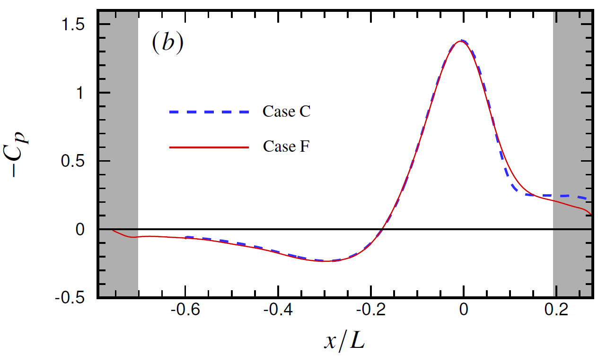

|
Public Access (formerly Langley Research Center)Turbulence Modeling Resource |
DNS: Flattened Speed Bump
Return to: Data from DNS - Intro Page
Return to: Turbulence Modeling Resource Home PageThe data on this page were provided by G. Coleman.
This case
is based on a quasi-2D version of the Boeing Gaussian Speed Bump (Case C), as described in:
Balin, R. and Jansen, K. E., "Direct Numerical Simulation of a Turbulent Boundary Layer Over a Bump
with Strong Pressure Gradients," Journal of Fluid Mechanics, Vol. 918, A14, 2021,
https://doi.org/10.1017/jfm.2021.312.
In the current Case F, however, the test wall is straight ("flattened"), while the opposite wall has a blowing/suction distribution that yields
the same pressure distribution on the straight wall as if it was the quasi-2D Boeing Gaussian Speed Bump shape. This allows the
investigation of curvature and pressure effects independently.
The flow was computed
using the incompressible Navier-Stokes equations in a pseudo-spectral code.
Additional details concerning the data,
code, and computational methodology can be found in:
(See also
the related 3-D experimental data and description of the original geometry in
Exp: Smooth Body Separation Experiment (SBSE) - Boeing Gaussian Bump with Error Function Shoulders).

Here is an explanation of what is in the data files provided:
The DNS data files are given here:
Return to: Data from DNS - Intro Page
Recent significant updates:
Page Curators: Christopher Rumsey,
Ethan Vogel,
Clark Pederson
Last Updated: 09/24/2024